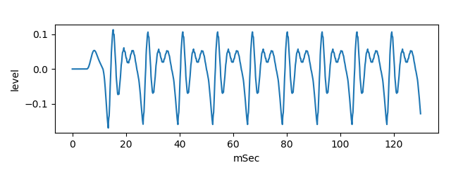
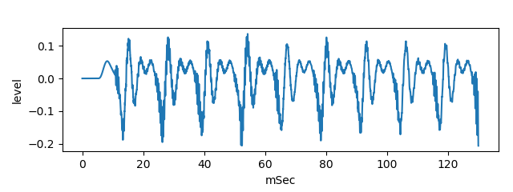

This is an experiment to generate vowel /i/ sound by two tubes model and noise source.
Generate noise sound, using perlin noise
python3 PerlinNoise.py
Generate pseudo vowel /i/ sound, without noise mix and with noise
python3 main2.py
It will save yout_i_long.wav (without noise mix)

and save yout_i_noise-mix_long.wav (with noise mix).

For more information, please see related WEB or
same content in Japanese
MIT
Regarding to PerlinNoise.py, please follow the notice in the source code.